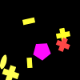
(1)
A red cross is smaller than a yellow shape.
A red cross is smaller than a yellow shape.
A yellow rectangle is above a yellow rectangle.
A magenta shape is to the left of a red cross.
A yellow shape is to the left of a rectangle.
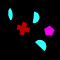
(2)
A cyan ellipse is farther from a cyan semicircle than a red cross.
A cyan shape is to the left of a semicircle.
A cyan shape is below a pentagon.
A red shape is closer to a magenta pentagon than a red cross.
A red shape is to the left of a cyan semicircle.
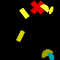
(3)
A semicircle is in front of a magenta cross.
A blue shape is farther from a blue semicircle than a red cross.
A yellow circle is to the left of a magenta cross.
A circle is closer to a gray circle than a blue semicircle.
A magenta cross is behind a semicircle.
(4)
A red rectangle is above a gray shape.
A triangle is lighter than a semicircle.
A gray square is farther from a gray shape than a red square.
A red semicircle is above a square.
A red semicircle is above a magenta ellipse.
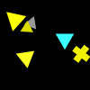
(5)
A gray shape is bigger than a red shape.
A gray rectangle is closer to a blue rectangle than a gray shape.
A cyan shape is smaller than a blue shape.
A yellow ellipse is farther from a yellow semicircle than a rectangle.
A gray rectangle is to the right of a blue rectangle.
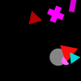
(6)
A yellow shape is bigger than a red triangle.
A magenta shape is to the right of a gray circle.
A cyan shape is below a magenta rectangle.
A red pentagon is darker than a triangle.
A green shape is bigger than a red triangle.
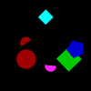
(7)
A triangle is above a pentagon.
A yellow shape is smaller than a gray circle.
A yellow pentagon is darker than a triangle.
A green pentagon is below a cyan shape.
A blue shape is smaller than a gray shape.
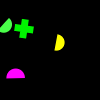
(8)
A gray shape is to the left of a blue cross.
A magenta triangle is below a square.
A blue shape is above a blue cross.
A blue triangle is bigger than a magenta triangle.
A blue cross is farther from a blue triangle than a gray square.
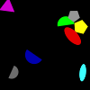
(9)
A red cross is darker than a red circle.
A red ellipse is closer to a red ellipse than an ellipse.
A circle is darker than a pentagon.
A red cross is farther from a red shape than a green ellipse.
A red ellipse is to the left of a red cross.
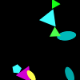
(10)
A red shape is farther from a cyan triangle than a triangle.
A yellow ellipse is in front of a magenta triangle.
A cyan ellipse is to the right of a cyan triangle.
A yellow shape is bigger than a yellow shape.
A green shape is smaller than a cyan triangle.

(11)
A blue shape is bigger than a cyan shape.
A red cross is below a green ellipse.
A cyan square is to the left of a green shape.
A blue circle is bigger than a cyan circle.
A blue shape is above a circle.
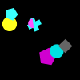
(12)
A gray shape is to the left of a magenta semicircle.
A cyan cross is behind a semicircle.
A magenta cross is to the left of a gray square.
A gray square is farther from a square than a cross.
A gray shape is to the right of a cyan cross.
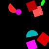
(13)
A square is above a gray square.
A red shape is bigger than a gray shape.
A red square is behind a red square.
A square is in front of a red triangle.
A green square is in front of a square.

(14)
A cyan ellipse is below a blue ellipse.
A cyan shape is below a blue ellipse.
A green shape is closer to a magenta shape than a cyan ellipse.
A cross is farther from a cyan ellipse than a yellow shape.
A magenta square is closer to an ellipse than a cyan ellipse.
(15)
A cyan shape is behind a yellow shape.
A red shape is to the left of a gray shape.
A yellow rectangle is smaller than a blue shape.
A gray shape is bigger than a gray shape.
A green ellipse is below a square.
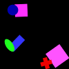
(16)
A magenta square is closer to a red cross than a blue rectangle.
An ellipse is closer to a pentagon than a blue circle.
A red shape is bigger than a magenta shape.
A green ellipse is to the left of a rectangle.
A magenta circle is in front of a magenta square.
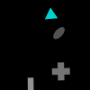
(17)
A gray rectangle is to the left of a gray cross.
A rectangle is farther from a semicircle than a gray shape.
An ellipse is above a cyan cross.
A rectangle is to the right of a gray cross.
An ellipse is farther from a gray rectangle than a cyan triangle.
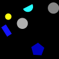
(18)
A pentagon is lighter than a pentagon.
A blue shape is in front of a rectangle.
A gray circle is lighter than a square.
A yellow shape is closer to a yellow circle than a gray circle.
An ellipse is darker than a rectangle.
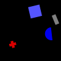
(19)
A blue square is above a blue shape.
A blue semicircle is to the right of a red shape.
A cyan rectangle is farther from a gray rectangle than a square.
A blue square is closer to a rectangle than a red cross.
A blue cross is lighter than a semicircle.
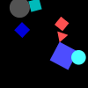
(20)
A gray circle is to the left of a triangle.
A blue square is to the left of a yellow ellipse.
A cyan circle is smaller than a gray shape.
A gray circle is closer to a cyan square than a cyan shape.
A red triangle is closer to a magenta cross than a square.

(21)
A magenta circle is in front of a circle.
A gray ellipse is to the left of a magenta semicircle.
An ellipse is in front of a red circle.
A cyan shape is behind a green shape.
A red shape is in front of a red shape.
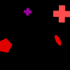
(22)
A yellow shape is smaller than a blue ellipse.
A cyan semicircle is above an ellipse.
A cyan shape is in front of a cyan semicircle.
A gray shape is smaller than a blue shape.
A cyan semicircle is closer to a cyan semicircle than a magenta triangle.
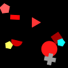
(23)
A square is behind a blue rectangle.
A blue square is smaller than a blue square.
A magenta shape is to the left of a yellow shape.
A blue rectangle is to the right of a yellow shape.
A red cross is below a yellow rectangle.
(24)
A magenta semicircle is below a blue shape.
A green ellipse is above a red shape.
A yellow shape is smaller than a green shape.
A blue semicircle is to the left of a blue cross.
A magenta semicircle is below a semicircle.
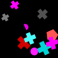
(25)
A red shape is smaller than a gray shape.
A rectangle is above a blue shape.
A blue pentagon is smaller than a green pentagon.
A green triangle is darker than a rectangle.
A green ellipse is to the right of a magenta square.
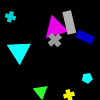
(26)
A pentagon is darker than a pentagon.
A magenta triangle is bigger than a green triangle.
A magenta triangle is closer to a cyan pentagon than a cyan square.
A gray rectangle is closer to a green triangle than a cyan pentagon.
A gray rectangle is closer to a magenta triangle than a blue shape.
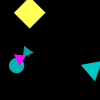
(27)
A cyan triangle is smaller than a cyan shape.
A magenta shape is above a magenta shape.
A magenta shape is in front of a cyan circle.
A magenta shape is in front of a circle.
A cyan triangle is to the right of a magenta triangle.
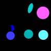
(28)
A cyan shape is farther from a yellow shape than a cyan shape.
A gray shape is farther from a magenta shape than a cyan shape.
A cyan pentagon is below a gray pentagon.
A gray pentagon is to the left of a square.
A square is to the left of a red shape.
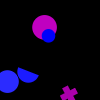
(29)
A semicircle is in front of a magenta cross.
A magenta cross is behind a semicircle.
A green triangle is closer to a cyan semicircle than a semicircle.
A cross is behind a yellow shape.
A blue square is farther from a cyan semicircle than a magenta shape.
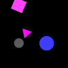
(30)
A magenta shape is lighter than a square.
A magenta shape is lighter than a square.
A magenta shape is farther from a circle than a gray circle.
A gray shape is bigger than a gray shape.
An ellipse is lighter than a triangle.
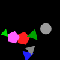
(31)
A cyan triangle is below a pentagon.
A gray circle is farther from a cyan rectangle than a green triangle.
A magenta triangle is farther from a red shape than a triangle.
A green triangle is smaller than a green shape.
A green triangle is farther from a gray circle than a gray triangle.
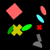
(32)
A cyan pentagon is to the right of a green shape.
A blue ellipse is bigger than a green ellipse.
A gray pentagon is closer to a blue ellipse than a green ellipse.
A gray pentagon is to the right of a cyan shape.
A green ellipse is to the left of a blue pentagon.
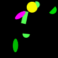
(33)
A magenta shape is to the right of a semicircle.
A green pentagon is above a green rectangle.
A green semicircle is above a green semicircle.
A semicircle is farther from a magenta shape than a semicircle.
A magenta ellipse is to the left of a yellow circle.
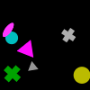
(34)
A gray cross is to the right of a gray shape.
A gray shape is smaller than a magenta shape.
A gray circle is smaller than a yellow shape.
A circle is smaller than a yellow shape.
A yellow cross is farther from a yellow circle than a magenta shape.
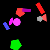
(35)
A triangle is below a gray shape.
A magenta ellipse is above a gray triangle.
A red ellipse is in front of a yellow triangle.
A yellow triangle is behind a magenta triangle.
A cross is bigger than a magenta cross.
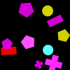
(36)
A gray square is farther from a triangle than a green ellipse.
A circle is above a gray shape.
A triangle is lighter than a yellow circle.
A blue circle is closer to a yellow circle than a yellow triangle.
A green ellipse is behind a gray triangle.
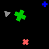
(37)
A green shape is smaller than a blue shape.
A rectangle is to the right of a green cross.
A green cross is closer to a rectangle than a gray shape.
A green shape is closer to a gray triangle than a blue shape.
A red shape is above a red shape.
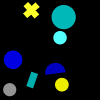
(38)
A cyan shape is bigger than a blue shape.
A cyan circle is above a cyan circle.
A blue circle is closer to a gray circle than a yellow circle.
A rectangle is farther from a cross than a cyan shape.
A cyan circle is lighter than a cyan rectangle.
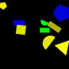
(39)
A green semicircle is smaller than a yellow shape.
A blue semicircle is above a rectangle.
A yellow shape is in front of a rectangle.
A green cross is below a blue shape.
A blue rectangle is to the right of a semicircle.
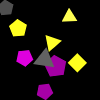
(40)
A magenta pentagon is below a magenta pentagon.
A gray shape is above a gray shape.
A yellow triangle is bigger than a yellow pentagon.
A magenta pentagon is in front of a gray shape.
A yellow shape is farther from a yellow semicircle than a magenta pentagon.
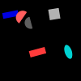
(41)
A gray square is to the right of a gray shape.
A blue shape is farther from a red rectangle than a gray shape.
An ellipse is to the right of a semicircle.
An ellipse is behind a red rectangle.
A red rectangle is below a red semicircle.
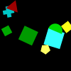
(42)
A rectangle is lighter than a cross.
A green shape is darker than a semicircle.
A yellow shape is to the left of a cross.
A triangle is in front of a cyan shape.
A pentagon is farther from a square than a yellow pentagon.
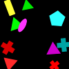
(43)
A blue pentagon is behind a gray shape.
A blue shape is farther from a semicircle than a gray shape.
A green ellipse is to the right of a gray semicircle.
A pentagon is farther from a blue ellipse than a gray shape.
An ellipse is to the right of a red shape.
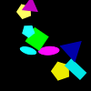
(44)
A cross is behind an ellipse.
A green triangle is smaller than a cyan shape.
A green shape is to the left of a green triangle.
A triangle is below a yellow triangle.
A cyan triangle is smaller than a green shape.
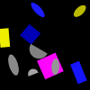
(45)
A green triangle is darker than a pentagon.
A green pentagon is to the left of a gray shape.
A green pentagon is to the left of a gray shape.
A cross is to the right of a green shape.
A cross is darker than a green pentagon.
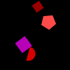
(46)
A yellow shape is farther from a rectangle than a circle.
A magenta circle is behind a yellow shape.
A green square is to the left of a cyan shape.
A magenta circle is behind a blue shape.
A magenta circle is in front of a circle.
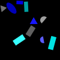
(47)
A semicircle is darker than a rectangle.
A yellow pentagon is farther from a red shape than a green square.
A magenta shape is farther from a magenta shape than a semicircle.
An ellipse is below a red shape.
A cross is above a semicircle.
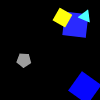
(48)
A green shape is below a triangle.
A blue shape is bigger than a yellow square.
A square is bigger than a yellow shape.
A cyan shape is farther from a cyan triangle than a yellow square.
A red shape is below a blue square.
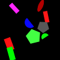
(49)
A green shape is in front of a red shape.
A green pentagon is lighter than a semicircle.
A pentagon is to the left of a green pentagon.
A green shape is bigger than a red shape.
A green pentagon is lighter than a green pentagon.
(50)
A rectangle is smaller than a red shape.
A gray rectangle is closer to a magenta circle than a semicircle.
A rectangle is closer to a magenta circle than a semicircle.
A gray circle is below a cyan shape.
A gray semicircle is to the left of a magenta shape.
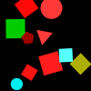
(51)
A blue pentagon is farther from a triangle than a yellow triangle.
A blue shape is farther from a triangle than a magenta pentagon.
A triangle is below a yellow triangle.
A yellow triangle is bigger than a cyan shape.
A magenta pentagon is to the right of a triangle.
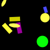
(52)
A rectangle is bigger than a cyan shape.
A blue shape is smaller than a yellow rectangle.
A green shape is to the right of a yellow rectangle.
A yellow circle is to the right of a rectangle.
A green shape is above a yellow circle.
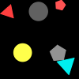
(53)
A cyan shape is to the right of a magenta semicircle.
A magenta shape is to the left of a green circle.
A magenta rectangle is above a circle.
A magenta cross is below a magenta semicircle.
A cyan circle is closer to a magenta shape than a yellow circle.
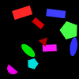
(54)
A red shape is bigger than a blue shape.
A pentagon is lighter than an ellipse.
A magenta rectangle is behind an ellipse.
A magenta semicircle is to the right of a cyan pentagon.
A red triangle is farther from a blue ellipse than a pentagon.
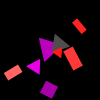
(55)
A green triangle is farther from a yellow square than a cyan square.
A yellow square is below a cyan square.
A magenta shape is bigger than a cyan shape.
A yellow square is to the left of a green square.
A cyan square is farther from a triangle than a red rectangle.
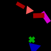
(56)
A gray rectangle is to the left of a red triangle.
A magenta rectangle is closer to a triangle than a blue triangle.
A blue shape is below a cross.
A red shape is closer to a magenta rectangle than a triangle.
A red shape is to the left of a red shape.
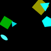
(57)
A cyan triangle is lighter than a triangle.
A cyan triangle is darker than a cyan triangle.
A cyan semicircle is to the right of a cyan triangle.
A cyan ellipse is to the left of an ellipse.
A triangle is lighter than a triangle.
(58)
A cyan triangle is to the right of a magenta triangle.
A yellow shape is to the right of a semicircle.
A yellow circle is lighter than a semicircle.
An ellipse is lighter than a yellow ellipse.
A red triangle is farther from a yellow shape than a cyan triangle.
(59)
A magenta shape is in front of a green cross.
A rectangle is closer to a gray pentagon than a triangle.
A green cross is farther from a rectangle than a blue semicircle.
A gray shape is to the left of a red shape.
A magenta ellipse is to the left of a green semicircle.
(60)
A magenta semicircle is to the right of a yellow cross.
A magenta shape is above a circle.
A triangle is above a semicircle.
A magenta triangle is darker than a semicircle.
An ellipse is farther from a yellow cross than a magenta semicircle.
(61)
A yellow shape is behind a triangle.
A triangle is to the left of a cyan shape.
A cyan semicircle is below a gray rectangle.
A cyan cross is darker than a semicircle.
A magenta triangle is closer to a cyan semicircle than a magenta triangle.
(62)
A triangle is to the right of a cyan rectangle.
A circle is to the left of a cyan circle.
A green shape is farther from a green circle than a triangle.
A green triangle is farther from a green circle than a red shape.
A green shape is below a cyan rectangle.
(63)
A blue shape is below a red shape.
An ellipse is lighter than an ellipse.
A cyan pentagon is farther from a red pentagon than a cyan pentagon.
A square is closer to a blue ellipse than a cyan pentagon.
A pentagon is to the left of a semicircle.
(64)
A green cross is in front of a green shape.
A magenta shape is in front of a cross.
A square is to the right of a red semicircle.
A green shape is farther from a square than a yellow cross.
A green cross is above a yellow pentagon.
(65)
A red square is bigger than a green shape.
A green shape is above a gray semicircle.
A green shape is behind a red triangle.
A red triangle is to the left of a square.
A red shape is to the left of a square.
(66)
A blue shape is farther from a green shape than a blue ellipse.
A semicircle is to the left of a square.
A square is farther from a cross than a blue cross.
A blue square is to the right of a green shape.
A green cross is closer to a blue cross than a blue square.
(67)
A square is to the left of a square.
A cross is bigger than a blue shape.
A cross is farther from a rectangle than a magenta shape.
A blue cross is to the left of a blue shape.
A green shape is below a green shape.
(68)
A blue shape is below a gray pentagon.
A square is closer to a blue semicircle than a gray triangle.
A blue shape is farther from a gray triangle than a blue semicircle.
A blue semicircle is closer to a square than a gray triangle.
A semicircle is lighter than a cross.
(69)
A yellow semicircle is smaller than a yellow shape.
A blue semicircle is above a blue shape.
A red rectangle is in front of a magenta rectangle.
A yellow rectangle is to the right of a blue shape.
A magenta rectangle is below a red pentagon.
(70)
A cyan circle is bigger than a red circle.
A circle is closer to a cyan circle than a cross.
A yellow square is in front of a circle.
A red shape is behind a cyan shape.
A cyan shape is behind a red circle.
(71)
A cyan cross is smaller than a red shape.
A square is farther from a red cross than a cyan cross.
A red shape is in front of a cyan square.
A magenta cross is above a cyan cross.
A red cross is farther from a gray square than a cyan shape.
(72)
A gray circle is behind a blue triangle.
A gray shape is behind a triangle.
A magenta shape is smaller than a yellow circle.
A magenta shape is farther from a gray cross than a gray rectangle.
A triangle is darker than a rectangle.
(73)
An ellipse is above a magenta shape.
A yellow triangle is below a magenta ellipse.
A magenta triangle is closer to an ellipse than a cross.
A red shape is above a magenta shape.
A magenta triangle is farther from a magenta shape than a magenta ellipse.

(74)
A magenta ellipse is smaller than a blue shape.
A red shape is to the right of a blue pentagon.
A square is closer to a red ellipse than a cyan shape.
A blue circle is above a blue shape.
A red shape is to the right of a red ellipse.
(75)
A blue circle is in front of a magenta shape.
A magenta ellipse is behind a magenta triangle.
A magenta pentagon is below a magenta shape.
A red shape is closer to a cross than a magenta triangle.
A magenta triangle is to the left of a cross.

(76)
A green shape is smaller than a yellow triangle.
A green shape is to the left of a green rectangle.
A green triangle is to the right of a yellow triangle.
A green rectangle is below a magenta shape.
A magenta ellipse is in front of a rectangle.
(77)
A yellow square is to the left of a cyan rectangle.
A red shape is below a rectangle.
A square is bigger than a cyan shape.
A cyan square is to the right of a gray shape.
A magenta semicircle is above a green semicircle.
(78)
A green square is bigger than a red square.
A red square is to the left of a green rectangle.
A green rectangle is smaller than a cyan rectangle.
A green rectangle is in front of a cyan rectangle.
A red shape is smaller than a red shape.
(79)
A rectangle is darker than a rectangle.
A yellow rectangle is to the left of a yellow pentagon.
A yellow shape is behind a cyan shape.
A red semicircle is smaller than a cyan shape.
A yellow triangle is darker than a pentagon.
(80)
A green ellipse is behind a blue shape.
A blue square is to the left of a blue square.
A red square is above a circle.
A blue rectangle is below a cross.
A blue square is bigger than a yellow square.
(81)
A gray cross is in front of a yellow ellipse.
A cyan shape is above a cross.
An ellipse is to the right of a cross.
A yellow ellipse is to the left of a blue ellipse.
A yellow shape is to the right of a blue ellipse.
(82)
A magenta triangle is closer to a cyan shape than a gray triangle.
A gray ellipse is smaller than a magenta ellipse.
A cyan cross is lighter than a circle.
An ellipse is below a gray triangle.
A yellow triangle is farther from a yellow rectangle than a gray triangle.
(83)
A blue square is bigger than a magenta shape.
A pentagon is lighter than a blue cross.
A rectangle is to the left of a blue shape.
A blue shape is darker than a cross.
A circle is closer to a blue ellipse than a green ellipse.

(84)
An ellipse is farther from a magenta cross than an ellipse.
A green square is to the right of a magenta cross.
A magenta cross is below a square.
A cyan ellipse is closer to a magenta cross than a magenta square.
A semicircle is closer to an ellipse than a green semicircle.
(85)
A blue pentagon is smaller than a gray pentagon.
A gray semicircle is below a rectangle.
A gray circle is above a green circle.
A yellow shape is below a green shape.
A circle is darker than a gray pentagon.
(86)
A cyan semicircle is in front of a square.
A cross is lighter than a cyan circle.
A cyan circle is to the left of a square.
A cyan square is behind a gray shape.
A circle is closer to a cross than a semicircle.
(87)
A gray circle is farther from a rectangle than a magenta shape.
A yellow triangle is below a triangle.
A gray shape is above a rectangle.
A gray shape is lighter than a semicircle.
A pentagon is below a circle.
(88)
A cyan shape is farther from a blue shape than a yellow semicircle.
A magenta shape is farther from a blue rectangle than a magenta semicircle.
A magenta semicircle is above a red ellipse.
A magenta semicircle is bigger than a yellow semicircle.
A circle is behind a pentagon.
(89)
A cyan shape is to the left of a cross.
A green shape is closer to an ellipse than a gray ellipse.
A magenta cross is closer to a cyan circle than a square.
A magenta cross is closer to a green shape than a pentagon.
A gray semicircle is lighter than a gray ellipse.
(90)
A triangle is smaller than a yellow triangle.
A triangle is farther from a blue square than a triangle.
A square is farther from a blue pentagon than a blue shape.
A gray shape is to the right of a red shape.
A green square is to the right of a triangle.

(91)
A triangle is below a pentagon.
A green cross is to the left of a blue pentagon.
A square is to the left of a cyan shape.
A square is above a blue shape.
A triangle is to the right of a square.
(92)
A yellow shape is in front of a circle.
A blue circle is behind a red pentagon.
A green rectangle is farther from a cross than a gray circle.
A circle is behind a green cross.
A blue circle is behind a green shape.
(93)
A yellow semicircle is to the right of a pentagon.
A yellow semicircle is to the left of a magenta semicircle.
A yellow cross is farther from a magenta pentagon than a magenta shape.
A yellow shape is above a semicircle.
A yellow pentagon is to the left of a magenta semicircle.
(94)
A green square is farther from a gray square than a magenta shape.
A magenta shape is bigger than a magenta shape.
A green square is to the right of a cyan shape.
A green square is to the right of a red square.
A rectangle is below a circle.
(95)
A cyan square is below a magenta shape.
A magenta square is smaller than a blue shape.
A cyan semicircle is to the right of a blue square.
A blue shape is bigger than a cyan shape.
A square is behind a cyan shape.
(96)
A cross is lighter than a rectangle.
A blue cross is farther from a cyan cross than a red rectangle.
A yellow shape is to the left of a green cross.
A green square is to the left of a gray shape.
A pentagon is to the right of a cyan cross.
(97)
A red pentagon is behind a magenta shape.
A magenta circle is to the right of a red shape.
A magenta triangle is farther from a circle than a red triangle.
A blue pentagon is behind a magenta pentagon.
A blue shape is closer to a blue pentagon than a triangle.
(98)
A gray cross is below a magenta rectangle.
A yellow semicircle is to the left of a rectangle.
A magenta rectangle is in front of a yellow cross.
A gray semicircle is behind a cross.
A yellow semicircle is above a gray semicircle.
(99)
An ellipse is closer to a cyan pentagon than a magenta ellipse.
A rectangle is bigger than a red shape.
A cyan pentagon is farther from a magenta shape than a red shape.
A red ellipse is to the right of a blue rectangle.
A red ellipse is farther from a blue rectangle than a red rectangle.
(100)
A magenta shape is bigger than a magenta shape.
A semicircle is in front of a green pentagon.
A triangle is to the right of a pentagon.
A green pentagon is closer to a gray triangle than a green shape.
A green shape is to the right of a green pentagon.